Filtering analytical units by indicator values using advanced filters
This tool provides an advanced possibility to filter analytical units by their attributes' values. It enables the limitation of the number of displayed analytical units via setting user defined intervals of attributes' values. Only analytical units with attribute values belonging into defined intervals are displayed in the charts and map.
To open a dialog for filters configuration, use the button “Configure filters” .
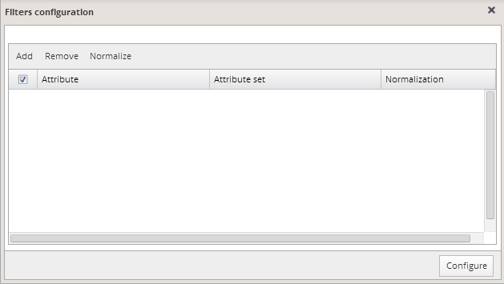
Click the "Add" button located in the header and check boxes in front of attributes that you want to use for filtering:
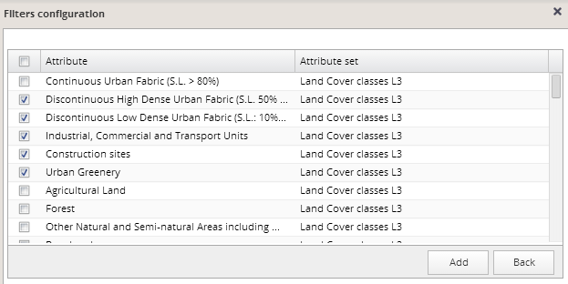
Click the "Add" button in the lower right corner and selected attributes will be added to the list of attributes for filtering.
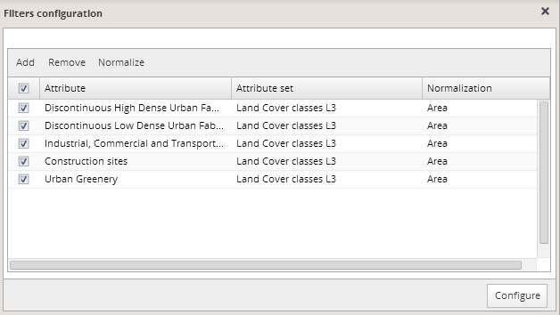
Attributes can be removed from the list by checking their boxes and clicking the "Remove" button in the header of the panel. By default, attributes are normalized on the unit area. This normalization can be removed or changed using the "Normalize" button. More details are described in the chapter normalization of attributes.
When the attribute list for normalization is complete, press the “Configure” button. It adds filters for each attribute from the list to the advanced filters panel:
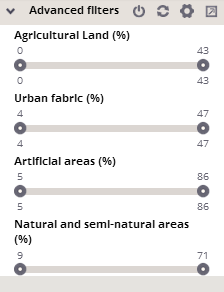
Filtering by one attribute
For each selected attribute, an axis appears in the advanced filters panel. By default, intervals for displayed units cover the complete scale of values available for each appropriate attribute.
You can modify these intervals by dragging circles over the axis for each attribute. An interval can be limited by setting its minimum and maximum values (by dragging both left and right circles).
When dragging the circle, a histogram with the distribution of attribute values in the dataset appears. The complete scale of values in the dataset is divided into 20 equal intervals in this histogram. The total number of units in the dataset with values of the appropriate attribute belonging into each of these intervals is represented by the height of each column. Small intervals that fall into the interval currently defined on the axis are highlighted in the color red in the histogram.
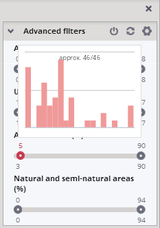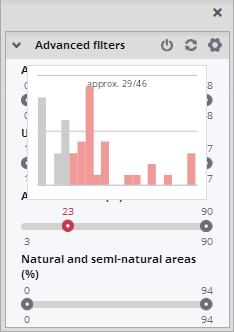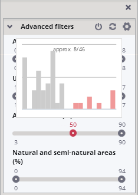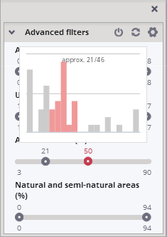
Filtering by more attributes
Once the filter is applied on some attribute, only units belonging to this interval are available for filtering by other attributes:
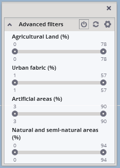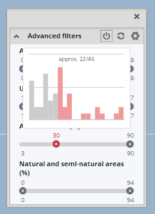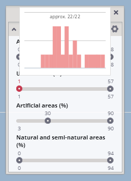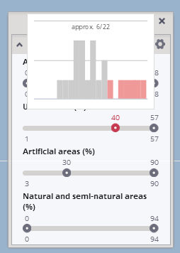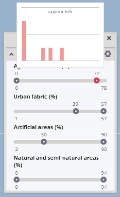
The example above shows, how the filtering process is influenced by the filter already applied for other attributes:
In this case, the initial complete set of units consists of 46 units. When filtering by a first attribute (% of Artificial areas), all 46 of these units are available. By this filter, 22 of the 46 units are selected from the initial set, and only these 22 units are available for filtering by the next attribute. Filtering by this next attribute (% of Urban fabric) reduces the number of units to 6. And only these 6 units will be available for eventual further filtering by other attributes. Whereas all 46 units would be available for filtering by the same attribute (% of Agricultural land) if no other filters would be applied:
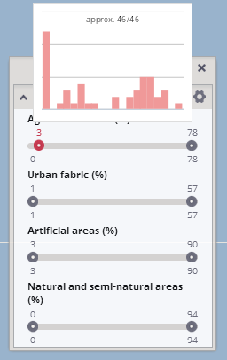
Activation of filters
Units selected using advanced filters will be selected in all other elements of the visualization (i.e. in the hierarchical tree of units, map and all charts and tables).
After setting the interval, the filter can be activated or deactivated by clicking on Activate/deactivate icon in the header of the panel: .
Once the filter is activated, the icon appears as follows: and only filtered units are selected under the current color selection.
After deactivation of the filter, all units are displayed; however, the filter settings remain preserved and the same filter can be activated again.
Intervals modification can be canceled by clicking on the "Reset" icon in the header of the panel.
An example of the use of these advanced filters on the same set of units is provided bellow:
a/ no limitation by filters – all units are displayed
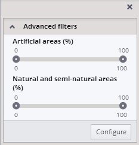 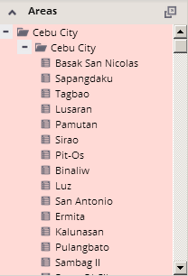 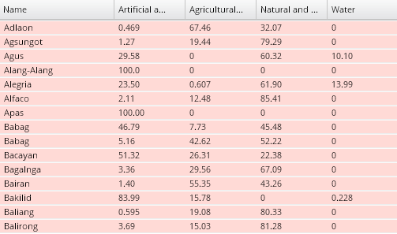
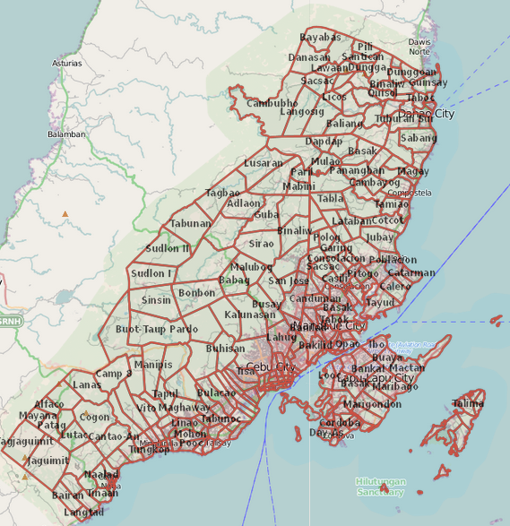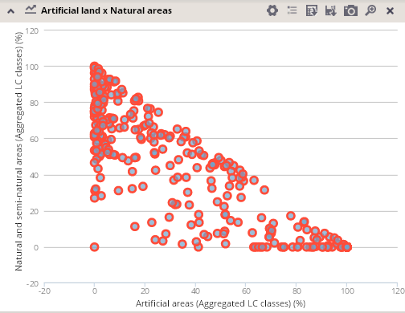
b/ filtration by one attribute
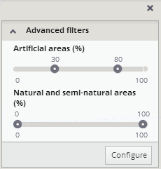 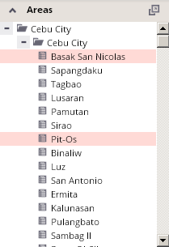 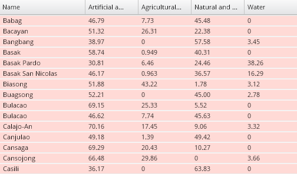
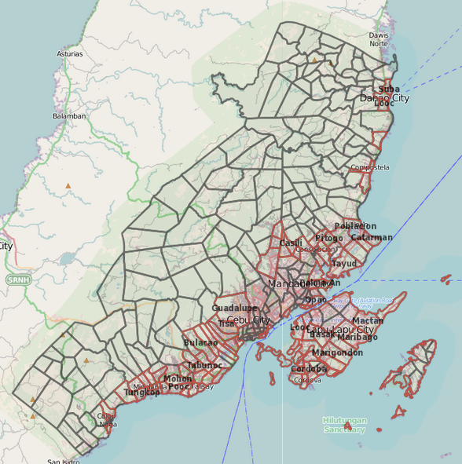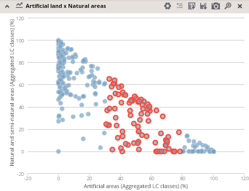
c/ filtration by another attribute
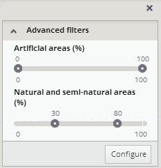 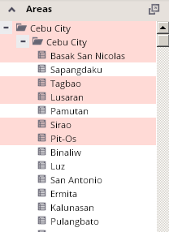 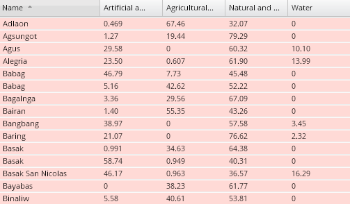
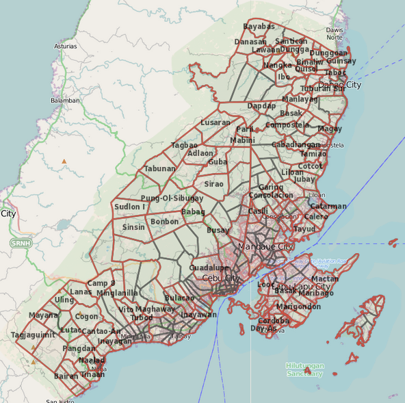 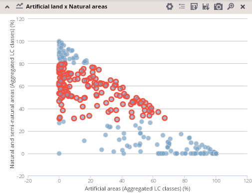
d/ filtration by two different attributes
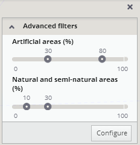 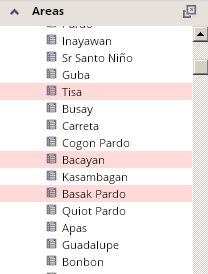 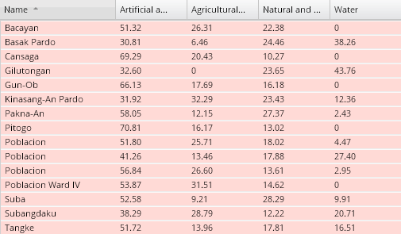
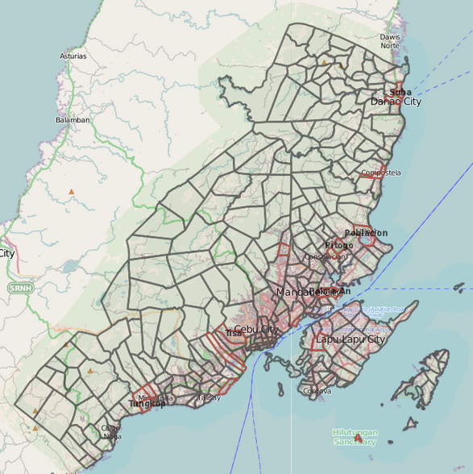